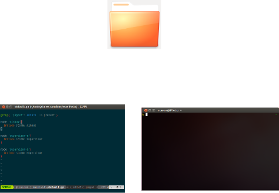
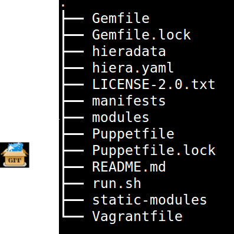
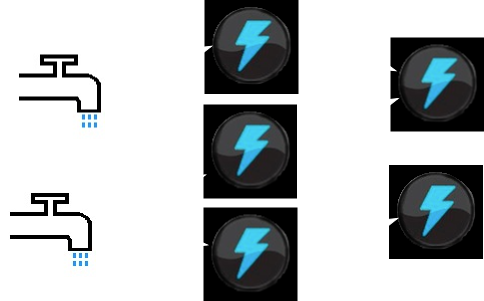
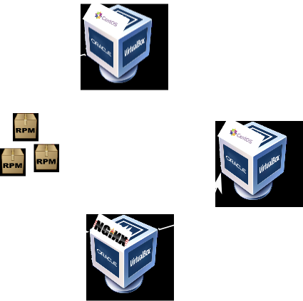

Vagrant sketching board
Playing in the sandbox
Created by Ronen Narkis / @narkisr
Vagrant
- Introduction
- Basic workflow
- Opskeleton
- Some (Advanced) use cases
- Extending
va·grant
" A person without a settled home or regular work who wanders from place to place and lives by begging."Vagrantfile
Vagrant::Config.run do |config|
config.vm.define :foo do |foo|
foo.vm.box = 'ubuntu-12.10'
foo.vm.network :bridged
foo.vm.customize ['modifyvm', :id, '--memory', 2048, '--cpus', 4]
foo.vm.host_name = 'foo'
end
end
Puppet integration
Vagrant::Config.run do |config|
config.vm.define :foo do |foo|
foo.vm.box = 'ubuntu-12.10'
foo.vm.network :bridged
foo.vm.customize ['modifyvm', :id, '--memory', 2048, '--cpus', 4]
foo.vm.host_name = 'foo'
foo.vm.provision :puppet,
:options => ["--modulepath=/vagrant/modules:/vagrant/static-modules"]
end
end
Shared folder editing
Puppet integration

An opinionated sandbox bootstraping tool
Aims to solve
- It works on my master
- Implicit/Missing dependencies
- Manual steps
- Non standard layout
- No clear development guidelines
Key goals
- Development workflow
- Dependency management
- Best practices
- Reproducibility and standardization
- Code data segregation
- Integrate existing tools
Opsk Sandboxes
- Virtualized
- Provisioned
- Iterative
- Distributable
- Easy to setup and teardown
Opsk demo
Dependencies
- OS version (Vagrantfile)
- Ruby version
- Gems (Puppet, Vagrant ..)
- External Puppet modules
Librarian Puppet
# Puppetfile, modules installed to modules dir
forge "http://forge.puppetlabs.com"
mod 'puppetlabs/stdlib'
mod 'puppetlabs/apt'
mod 'editfile',
:git => 'git://github.com/mstrauss/puppet-editfile.git'
RVM
# .rvmrc
ruby_string="ruby-1.9.3"
gemset_name="foo-sandbox"
if rvm list strings | grep -q "${ruby_string}" ; then
# Load or create the specified environment
if [[ -d "${rvm_path:-$HOME/.rvm}/environments" \
...
else
rvm --create "${ruby_string}@${gemset_name}"
fi
( # Ensure that Bundler is installed, install it if it is not.
if ! command -v bundle ; then
gem install bundler
fi
# Bundle while redcing excess noise.
bundle | grep -v 'Using' | grep -v 'complete' | sed '/^$/d'
)&
else
... Bundler
# Gemfile
# opskelaton Gems
source "https://rubygems.org"
gem 'vagrant', '>=1.0.5'
gem 'puppet'
gem 'puppet-lint'
gem 'librarian-puppet'
gem 'rake'
Hiera
# hiera.yaml
:backends:
- yaml
:logger: console
:hierarchy:
- '%{::virtual}'
- common
:yaml:
:datadir: hieradata
# hieradata/physical.yaml
---
user: "ronen"
# hieradata/virtualbox.yaml
---
user: "vagrant"
Easy execution
# run.sh
puppet apply --modulepath=modules:static-modules \
manifests/default.pp --hiera_config hiera.yaml $@
Module life cycle
Use cases
puppet-base-env
sandboxed environment management
# manifests/default.pp
include git
include shell
include baseline
include langs
include vim
include build
class {'desktop':
home => $home,
username => $username
}# A class which sets up programming languages
class langs {
include langs::build_essential
include langs::ruby
include langs::coffeescript
include langs::jdk
}
Virtualbox vs Physical
# hiera.yaml
---
:backends:
- yaml
:logger: console
:hierarchy:
- '%{::virtual}'
- common
:yaml:
:datadir: hieradata
# hieradata/physical.yaml
---
user: "ronen"
home: "/home/ronen"
scm_user: "narkisr"
scm_email: "narkisr@gmail.com"
# hieradata/virtualbox.yaml
---
user: "vagrant"
home: "/home/vagrant"
scm_user: "vagrant"
scm_email: "vagrant@gmail.com"
Clustered environments
Storm
 # Management machine
config.vm.define :nimbus do |nimbus|
# ...
nimbus.vm.host_name = 'nimbus'
nimbus.vm.network :hostonly, "192.168.1.10"
end
# worker machines
config.vm.define :super_a do |supervisor|
# ...
supervisor.vm.host_name = 'supervisor-a'
supervisor.vm.network :hostonly, "192.168.1.11"
end
config.vm.define :super_b do |supervisor|
# ...
supervisor.vm.host_name = 'supervisor-b'
supervisor.vm.network :hostonly, "192.168.1.12"
end
# default.pp
node 'nimbus'{
include storm::nimbus
}
node 'supervisor-a'{
include storm::supervisor
}
node 'supervisor-b'{
include storm::supervisor
}
class storm {
package{ 'zeromq':
ensure => installed,
provider => dpkg,
source => '/vagrant/fpm-recipes/zeromq/pkg/zeromq_2.1.7+fpm0_amd64.deb',
}
package{ 'jzmq':
ensure => installed,
provider => dpkg,
source => '/vagrant/fpm-recipes/jzmq/pkg/jzmq_1.0.0+fpm0_amd64.deb',
require => Package['zeromq']
}
package { 'storm':
ensure => installed,
provider => dpkg,
source => '/vagrant/fpm-recipes/storm/pkg/storm_0.8.1+fpm0_all.deb',
require => Package['openjdk-6-jdk','zeromq','jzmq','unzip']
}
#...
Packaging storm
Fpm
# note how maunual this is
$ wget http://ftp.osuosl.org/pub/hudson/war/1.396/jenkins.war
# using flags to set package type name version etc..
$ fpm -s dir -t deb -n jenkins -v 1.396 --prefix /opt/jenkins jenkins.war
FPM Cookery
class ZeroMQ < FPM::Cookery::Recipe
description 'The Intelligent Transport Layer'
name 'zeromq'
version '2.1.7'
homepage 'http://www.zeromq.org'
source 'http://download.zeromq.org/zeromq-2.1.7.tar.gz'
sha256 '2a1416d0a3ea55ae17d43417fd9bd193412cc9101e144bc8d3bd19fe36816e0d'
def build
# configure and make are build in
configure :prefix => prefix
make
end
def install
# prefix is #{cwd}/tmp-dest
make :install, 'DESTDIR' => destdir
end
end
Packaging and Provisioning
Extending Vagrant
Host lookup nightmare
master.vm.host_name = 'jenkins-master'
master.vm.network :hostonly, "192.168.1.10"
# ...
slave.vm.host_name = 'jenkins-slave'
slave.vm.network :hostonly, "192.168.1.11"
# ...
artifactory.vm.host_name = 'artifactory'
artifactory.vm.network :hostonly, "192.168.1.12"
# ...
gitolite.vm.host_name = 'gitolite'
gitolite.vm.network :hostonly, "192.168.1.13"
Vagrant DNS server
Usage
# opskelaton Gems
source "https://rubygems.org"
gem 'vagrant', '>=1.0.5'
gem 'puppet'
gem 'puppet-lint'
gem 'librarian-puppet'
gem 'rake'
# in order to use we add the gem
gem 'vagrant-dns-server'
Implementation
Registration
Vagrant.actions[:provision].insert_after(Vagrant::Action::VM::Provision, Update)
Vagrant.actions[:start].insert_after(Vagrant::Action::VM::Boot, Update)
Vagrant.actions[:destroy].insert_after(Vagrant::Action::VM::ProvisionerCleanup, Remove)
# lib/vagrant/action/builtin.rb
module Vagrant
module Action
class Builtin < Registry
# ...
register(:start) do
Builder.new do
# ...
use VM::CleanMachineFolder
use VM::ClearForwardedPorts
use VM::CheckPortCollisions, :port_collision_handler => :correct
use VM::ForwardPorts
use VM::Provision # <= Update will happen here
# ...
end
end
end
end
end
Middleware
class Update
def initialize(app, env)
@app = app
end
def call(env)
@app.call(env)
update env[:vm] if env["vm"].state == :running
end
protected
def update(vm)
VagrantDns::NetworkBinder.new.bind(vm)
end
end
Accessing VM properties
class NetworkBinder
def bind(vm)
(host,ip) = host_ip(vm)
Status.new.report(host,ip,:up)
end
# ...
private
def host_ip(vm)
networks = vm.config.vm.networks.find_all do |type,network_parameters|
type == :hostonly
end
ips = networks.map {|type,params| params.first}
host = vm.config.vm.host_name
[host,ips.first]
end
end
UI and Zeromq
UI = Vagrant::UI::Colored.new('dns')
class Status
def report(host,ip,status)
# publishing
context = ZMQ::Context.new
pub = context.socket(ZMQ::PUB)
pub.connect(CONF.get('zmq_url'))
UI.say(:debug,"connection made")
res = pub.send("#{CHANNEL} #{host} #{ip} #{status.to_s}", ZMQ::NOBLOCK)
# notifying during boot
UI.say(:info,"notifying server with #{status} status") if res
UI.say(:info, "server not up, skipping notifying #{status} status") if not res
pub.close
end
end
Summary
- Sandboxes are key to devop process
- Use opsk for create standard sandboxes
- Experiment extend and have fun!
Me
- @narkisr
- github.com/narkisr
- narkisr.com
- il.linkedin.com/in/narkisr/
- lambda.org.il
- github.com/narkisr/vagrant-sketching-board